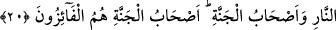

HERKES,
YARINA NE HAZIRLADIĞINA
BAKSIN
18. Ey îman edenler! Allah’tan korkun ve herkes, yarına ne hazırladığına baksın.
Allah’tan korkun, çünkü Allah, yaptıklarınızdan haberdardır.
19. Allah’ı unutan ve bu yüzden Allah’ın da onlara kendilerini unutturduğu
kimseler gibi olmayın. Onlar yoldan çıkan kimselerdir.
20. Cehennem ehliyle cennet ehli bir olmaz. Cennet ehli, isteklerine erişenlerdir.
“Ey îman edenler! Allah’tan korkun.” Saf bir inançla inanıp, her yaptığınız ve terk
ettiğinizde Allah’tan sakının. İtâatte bulunmak sûretiyle isyan etmekten korunun. O’na
şükrederek nankörlükten kaçının. Zikrederek unutmaktan korunun. O’nun fiillerinin ve
sıfatlarının şühûduyla kendi sıfatlarınız ve fiillerinizle perdelenmekten sakının!
“Ve herkes, yarına ne hazırladığına baksın.” Buradaki mâ harfi şart mânâsınadır.
Yâni kıyamet günü için amellerden hangisini hazırlamıştır bir baksın. Eğer hayır ve
ibâdetler takdim ederse şükrünü edâ eder ve onu artırmaya çalışır. Şayed günah
göndermişse ona tevbe eder ve pişman olur.
Âyet-i kerimede Allah Teâlâ âhireti yarın anlamındaki “ğad” kelimesiyle ifâde
buyurmuştur. Yakın olduğundan ve her gelecek çok yakın bulunduğundan bu
isimlendirme yapılmıştır. Yâni Cenab-ı Hak, son derece yakın olduğuna dikkat çekmek
için âhiret gününü, senin içinde bulunduğun bu gününü takib eden ğad/yarın ismiyle
adlandırmıştır.
Hasan Basrî (r.h.)’den rivâyet edildiğine göre Cenab-ı Hak, âhireti yarınmış gibi
yaklaştırmağa devam etmektedir. Nitekim “...bir gece veya gündüz ona emrimiz
(âfetimiz) gelir de onu sanki dün yerinde yokmuş gibi kökünden koparılarak
biçilmiş bir hale getirtiriz...” (Yunus, 10/24) âyet-i kerimesi de bunun bir benzeridir.
Bununla da zamanın yakınlığını kasdetmektedir. Veya dünya zamanı bir gün, âhiret de o
günün ertesi olan yarın gibi olduğundan âyet-i kerimede âhiret ğad/yarın kelimesiyle
ifâde buyrulmuştur. Her ikisi için de birbirine benzeyen husûsi haller ve hükümler